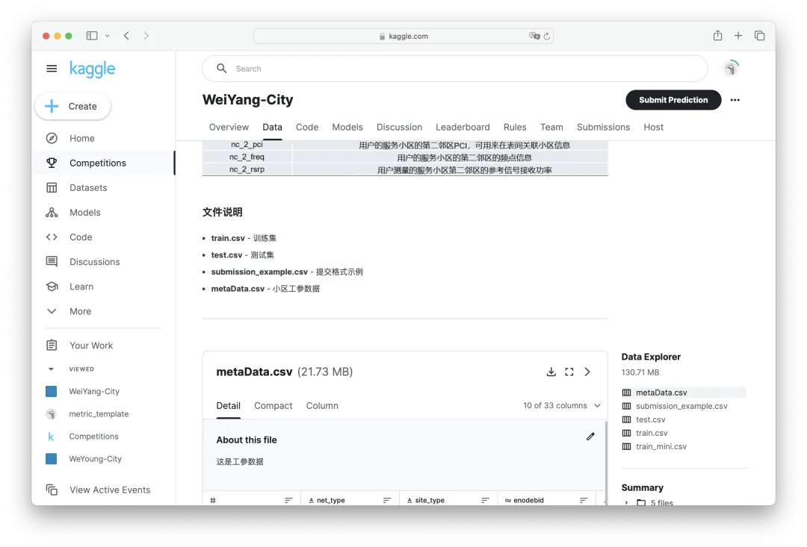
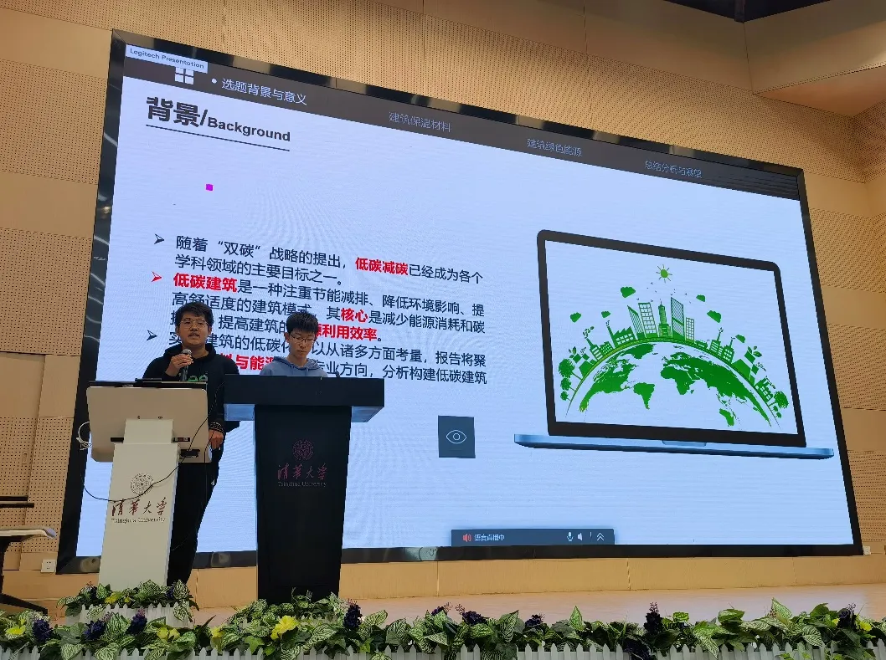
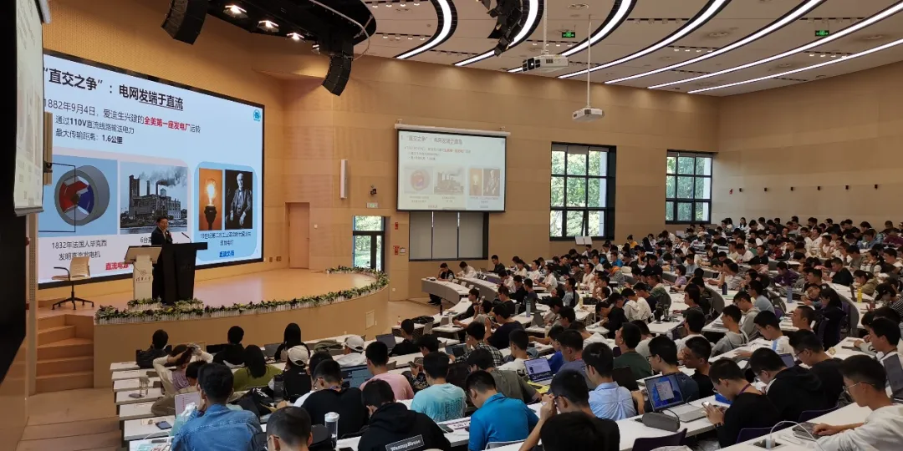
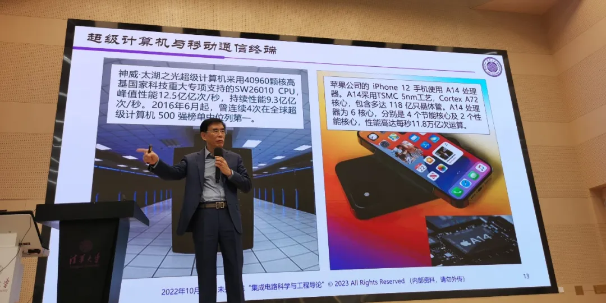
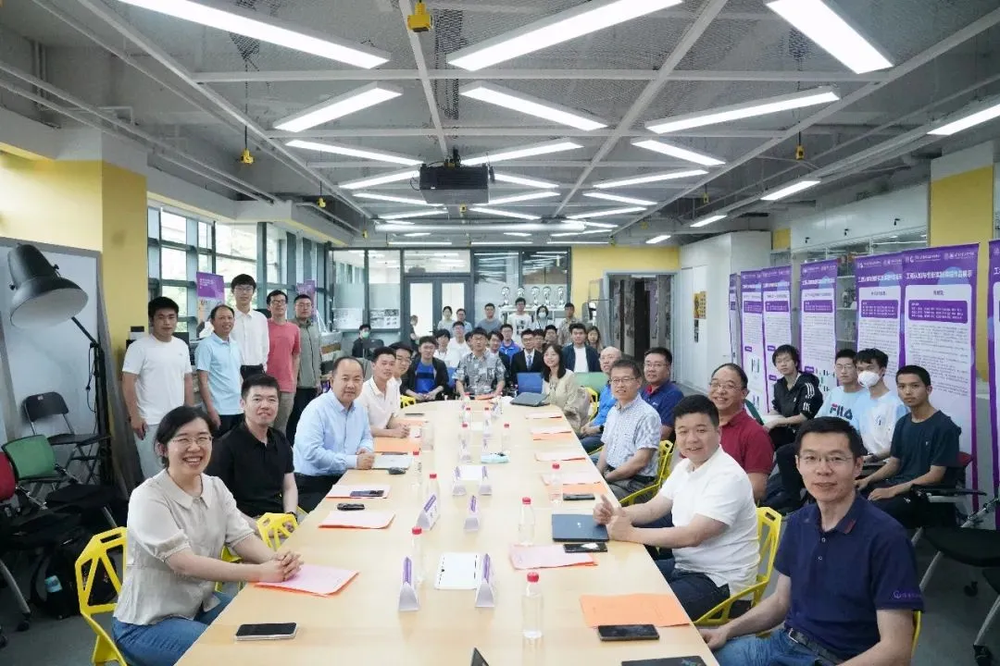
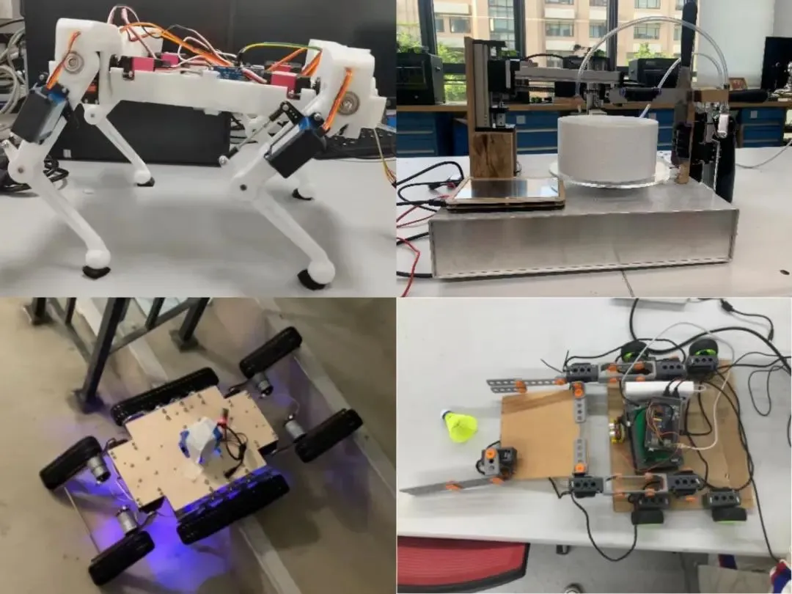
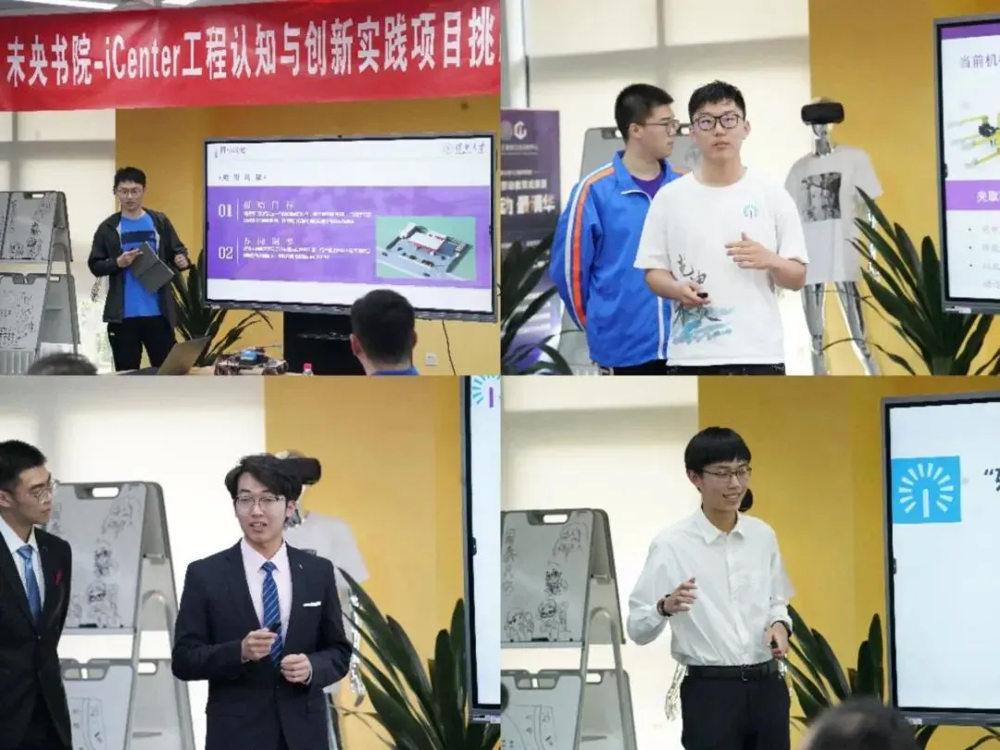

未央科协丨赛事部介绍

赛事部
1. 部门介绍
赛事部主要负责各类赛事的策划、协办与举办，主要工作包含 “未央城”赛事、 "未央十二宫"赛事、 icenter赛课结合项目等。
“未央城”赛事
在筹办“未央城”比赛中，赛事部与企业对接，力求在真实数据集背景下设立赛题。我们策划了面向赛题的系列课程，编撰个性化的指导文档，为各个方向同学交叉发展提供技术支撑。在这里，你将体会到一个科创赛事从萌芽到绽放的全过程，如何将复杂的问题抽丝剥茧，如何将简单的想法落地生根。从赛题的选择到赛道的设计，从培训的形式到评测的机制，我们将致力于一个更加真实，更加智能，更加多元的”未央城“赛事。  “未央城”赛事kaggle评测界面 未央城概念图
“未央十二宫”新生认知挑战赛
“未央十二宫”新生认知挑战赛，是一个旨在增强新生们对学校、学科文化的了解，增进科研兴趣，让新生们初步感受大学赛事氛围的赛事。举办此项赛事，是赛事部的主要工作之一。    未央十二宫第四届实况图
iCenter工程认知与创新实践课程
赛事部与iCenter合作，开设工程认知与创新实践课程，以赛课结合为形式，帮助同学在工程认知的基础上，以团队协作的方式进行创新实践。    icenter 赛课结合课程图
2. 我们期待这样的你
如果你对科创赛事有热情、对钻研探索有兴趣，致力于为未央打造更好的品牌赛事；
如果你对人工智能，硬件软件等技术有热情；
如果你热爱探索，拥抱新技术......
未央赛事欢迎所有乐于探索的同学！
3. 你将在这里收获
讨论赛事时brainstorm的思想交锋
零基础友好的的开发培训
深度参与的项目经历
同样对赛事有热情的小伙伴
与其他院系科协交流讨论的机会......
我们欢迎每一个你！
4. 联系人及联系方式
赛事部副主席 党余凡（微信号：r906067584y）
赛事部部长 姚汝昌（微信号：Yrc-fiasco）
赛事部部长 张云皓（微信号：18686728701）
赛事部部长 肖凯元（微信号：kevinxiao190262）